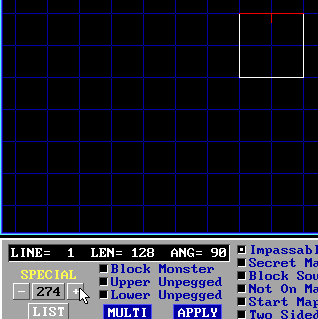
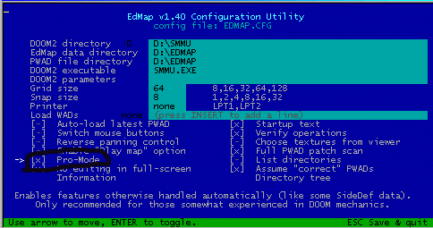
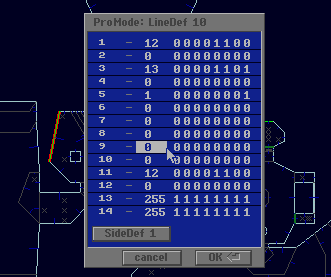
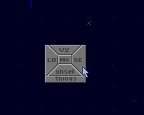
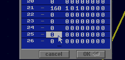

Basic Script Implementation
Basic Script Implementation
So here it is, the first tutorial that shows you how to implement an actual script into your level. Fun, ain't it?
Tools Needed:
- Your editor-of-choice
- An editor that supports linedef special tags up to 500 or so, in this tutorial, Waded is used
- An editor that supports manual tag changing, in this tutorial, Edmap 1.40 is used.
- NWT 1.03
Alright, for this, we'll have a pretty complex script. First, the floor will shift up 32 units; then a message will
be displayed, and after 200 tics, the level will be exited.
First, you can download the base environment here. This is a simple room with a player one start with a switch (no special tag, yet.)
WadEd only saves ONE LEVEL in a new wad. Do _not_ load a level from a wad with multiple maps and save as the same filename!
Your first goal would be to give the switch a tag number. To do so, load up the .wad in Waded (using the command line waded -2 tutbas1.wad). Left-click on the right sidebar where it says "lines". Click on the northern linedef. Right-click on the plus button next to the tag type (screenshot below) until you get around the 260-290 range, then left-click to adjust more accurately.

Save your level by clicking the save button on the right sidebar (as a different filename, just to be on the safe side).
Now, here comes the somewhat complicated part. Open up edmapcfg.exe, and make sure you have pro-mode enabled (there should be an 'X' next to it.

Load your level in Edmap, now. Move your mouse over the northern linedef, and when it is highlighted, press the space bar. A bunch of binary code will come up, but you are interested in bit #9. Bit 9 is the tag number of the linedef; it will also be the script number SMMU will look for when the linedef is activated. Left-click on bit #9, and give it a tag of, oh, say, 70.

SMMU also needs a tag number for the _sector_. First, change edmap to Sector Mode by holding the left mouse button, and dragging a little. You'll see a small picture come up, like that below. Select "Se".

Now, when you move your mouse around, you'll see the sectors being highlighted. Press space on the sector, and this time edit Bit #25. Bit #25 is also the tag number, except this time for sectors. Mind you that bit #25 does not have to be the same tag number as the linedef it will function with, so let's use 13 for this sector's tag number.

Afterwards, save your map (again, preferably to a different .wad to be safe) and quit out of Edmap.
Congratulations! You've finished the level-editing portion of SMMU scripting. Let's move on, shall we?